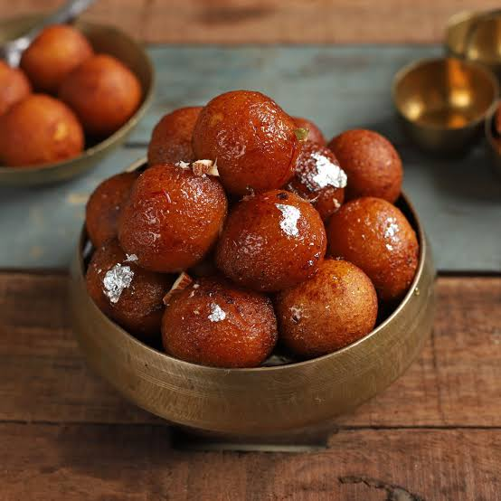

Gulab Jamun
- 1 cup milk powder
- 1/4 cup all-purpose flour
- 1/4 teaspoon baking soda
- 2 tablespoons ghee (clarified butter)
- 1/2 cup milk
- Oil for frying
- For Sugar Syrup:
- 1 cup sugar
- 1 cup water
- 1/2 teaspoon cardamom powder
Instructions: Mix milk powder, flour, baking soda, and ghee. Add milk and knead into a soft dough. Make small balls. Heat oil and fry balls until golden brown. Make sugar syrup with sugar, water, and cardamom. Soak fried balls in syrup.
Rasgulla

- 1 liter milk
- 1/4 cup lemon juice
- 2 cups sugar
- 4 cups water
- 1/2 teaspoon cardamom powder
Instructions: Boil milk, add lemon juice to curdle. Drain water using a muslin cloth. Knead paneer until smooth. Make small balls. In a separate pan, mix sugar, water, and cardamom. Boil and add paneer balls. Cook until they double in size.
Kheer

- 1/2 cup rice
- 1 liter milk
- 1/2 cup sugar
- 1/4 cup mixed nuts (cashews, almonds, pistachios)
- 1/2 teaspoon cardamom powder
Instructions: Cook rice in water until soft. Boil milk, add cooked rice and simmer until thick. Add sugar, nuts, and cardamom powder. Cook until the kheer reaches the desired consistency. Serve chilled.
Jalebi

- 1 cup all-purpose flour
- 1 tablespoon gram flour
- 1/2 teaspoon baking soda
- 1 cup yogurt
- 1/4 teaspoon saffron strands (soaked in warm water)
- 1 cup sugar
- 1/2 cup water
- 1/2 teaspoon cardamom powder
- Oil for frying
Instructions: Mix flour, gram flour, baking soda, yogurt, and saffron water to make a batter. Ferment for a few hours. Make sugar syrup with sugar, water, and cardamom. Heat oil, pour batter in a spiral shape, fry until golden brown. Soak in sugar syrup for a few minutes.